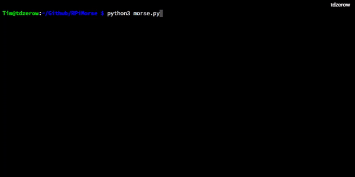
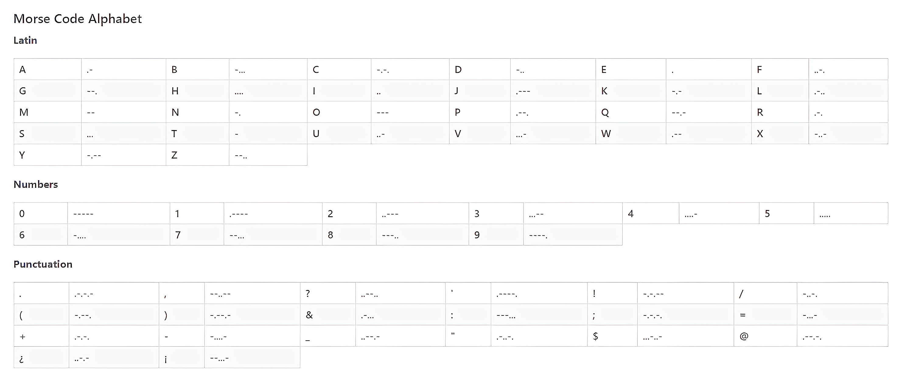
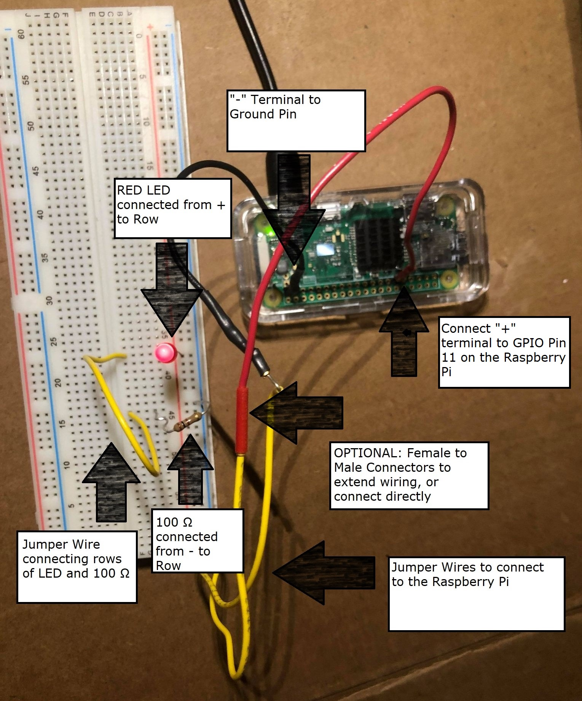
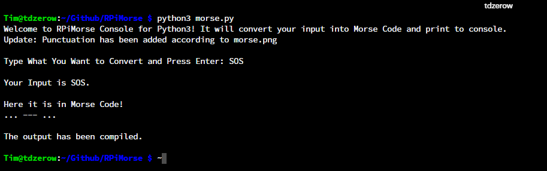

RPiMorse for Raspberry Pi
A python program to convert standard input to morse code, printing to console (all) or flashing an LED via GPIO Pins (Pin 11). Run morse.py to get a universal Morse Code translator on console for any device with Python,or run rpi.py if you have a Raspberry Pi with an LED circuit for more real world translations!


## Global Requirments:
Python Version 2 or higher
### For Pi Version:
Raspberry Pi with GPIO Pins
An LED
A 100 Ω Resistor
A Breadboard
3+ Jumper Wires (More for Stablity)
## Setup
RPiMorse uses the following translations to convert regular input to Morse Code:

For the LED Version, construct the following circuit:

# Documentation for Pi Version:
For testing purposes, if your python version is 3 or higher, please run the program rpi3.py. If your version is lower, run rpi2.py.
## Or just run rpi.py for guranteed console functionality (chooses version for you, even with no Pi!).

# Documentation for Console Versions:
For testing purposes, if your python version is 3 or higher, please run the program morse3.py. If your version is lower, run morse2.py.
## Or just run morse.py for guranteed console functionality (chooses version for you!).
